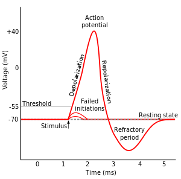

Essentials
A neuron fires if the the RMP + stimulus is greater than the threshold. In order to cross the threshold of −50, we need a stimulus of 20 (and a little) mV. Since we round to the nearest whole number, the answer is 20 mV. If the RMP was less negative than the threshold, then no stimulus would be needed - 0 mV.
Additional Information
If and only if the membrane potential crosses the threshold will an action potential be generated. Once an action potential is created, an all−or−none response is created.

Image from Wikipedia